Guide d'utilisation
1. Avant de commencer
Ce guide suppose qu'EL-HAKIM PRO est installé et configuré (voir le Guide d'installation et de configuration) et que vous avez votre identifiant et votre mot de passe.
1.1 Je suis secrétaire
Lisez dans l'ordre :
- « Découvrir l'écran principal »
- « Gérer les patients »
- « Gérer les rendez-vous et l'agenda »
- « Accueillir les patients : la salle d'attente »
Le compte Secrétaire est limité aux données administratives. Dans le dossier d'un patient, la partie médicale affiche Accès restreint : c'est normal (secret médical). La Caisse, la Configuration et la Licence ne sont pas accessibles.
1.2 Je suis médecin
Lisez tout le guide. Les chapitres les plus utiles au quotidien :
- « Accueillir les patients : la salle d'attente »
- « Faire une consultation »
- « Rédiger une ordonnance »
- « Clôturer la visite et encaisser »
- « Établir un document »
2. Découvrir l'écran principal
Après la connexion, EL-HAKIM PRO s'ouvre sur Vue d'ensemble : le tableau de bord de la journée.

- Vue d'ensemble : le menu de gauche. Il ouvre tous les écrans : Patients, Médicaments, Agenda, Modèles, Caisse, Configuration et Licence & Abonnement.
- Patients Totaux : le nombre de dossiers du cabinet.
- RDV du jour : le nombre de rendez-vous prévus aujourd'hui.
- Utilisateurs : les comptes du cabinet (visible seulement par l'administrateur).
Le tableau de bord montre aussi les Recettes du jour (DZD), le nombre de patients En attente, les Dernières consultations, les Rendez-vous du jour et la Salle d'Attente.
L'écran ouvert est surligné dans le menu. La flèche en bas du menu (Réduire le menu) le replie pour gagner de la place.
2.1 Les notifications
- En haut à droite, cliquez sur la cloche. Le nombre rouge indique les notifications non lues.
- La liste s'ouvre : rendez-vous du jour, patients arrivés en salle d'attente. Tout effacer vide la liste.
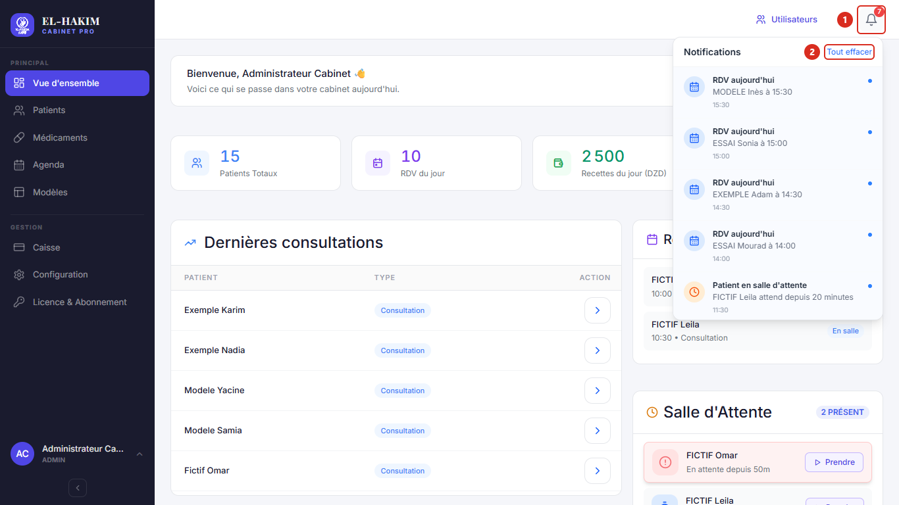
Avant chaque rendez-vous, EL-HAKIM PRO affiche un rappel « Rendez-vous prévu dans … minutes » avec un son.
2.2 Se déconnecter
Cliquez sur votre nom en bas à gauche, puis sur Se déconnecter. Faites-le toujours avant de quitter le poste.
3. Gérer les patients
3.1 Trouver un patient
- Dans le menu de gauche, cliquez sur Patients. La liste des dossiers s'affiche.
- Tapez une partie du nom, du prénom ou du téléphone dans RECHERCHER. La liste se réduit pendant la saisie.
- Pour départager deux homonymes, saisissez aussi la DATE DE NAISSANCE (JJ/MM/AAAA).
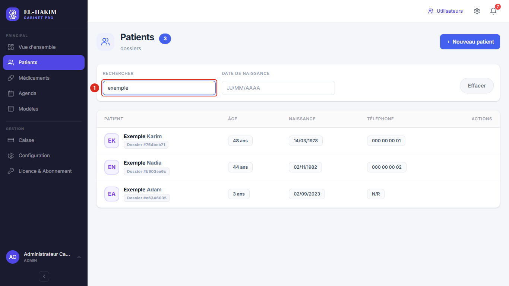
Effacer remet la liste complète.
3.2 Créer un dossier patient
- Cliquez sur ＋ Nouveau patient.
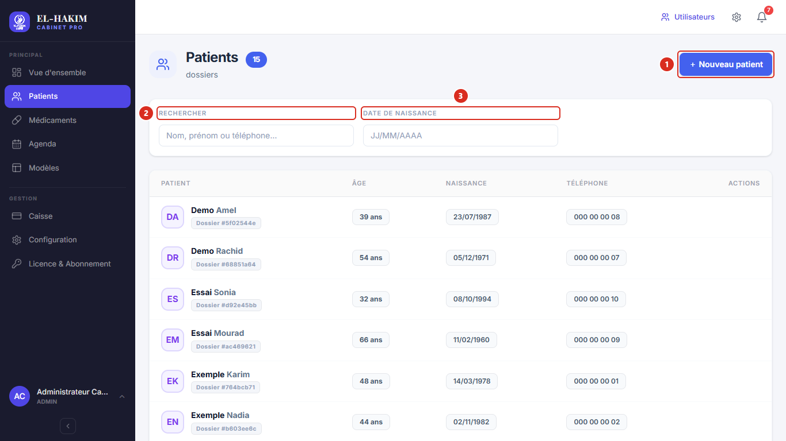
La fenêtre Nouveau Dossier s'ouvre, sur l'onglet État Civil.
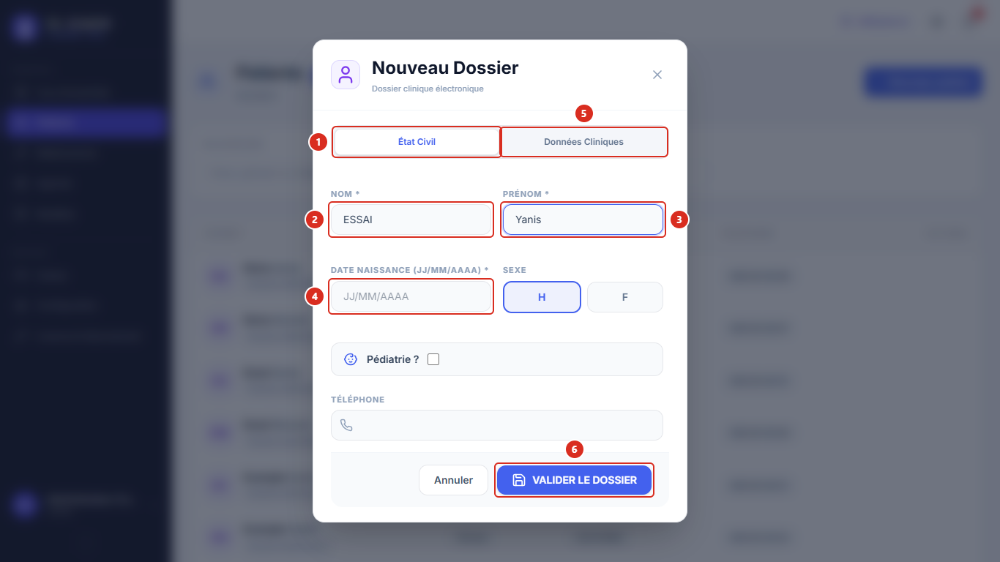
- Saisissez le NOM du patient.
- Saisissez son PRÉNOM.
- Saisissez sa DATE NAISSANCE au format JJ/MM/AAAA (exemple : 14/03/1978), puis choisissez le SEXE (H ou F). Pour un enfant, cochez Pédiatrie ?.
- Si vous les connaissez, ouvrez l'onglet Données Cliniques : taille, poids, groupe sanguin, allergies, antécédents.
- Cliquez sur VALIDER LE DOSSIER.
Les champs marqués d'une étoile (*) sont obligatoires. S'il en manque un, le message Formulaire invalide indique lequel.
Si un patient avec les mêmes nom, prénom et date de naissance, ou le même téléphone, existe déjà, EL-HAKIM PRO vous le signale : « Un patient avec le même Nom/Prénom/Date de naissance, ou le même numéro de téléphone existe déjà… ». Vérifiez dans la liste avant de créer un doublon.
3.3 Ouvrir le dossier d'un patient
Dans la liste, cliquez sur le nom du patient. Son dossier s'ouvre.
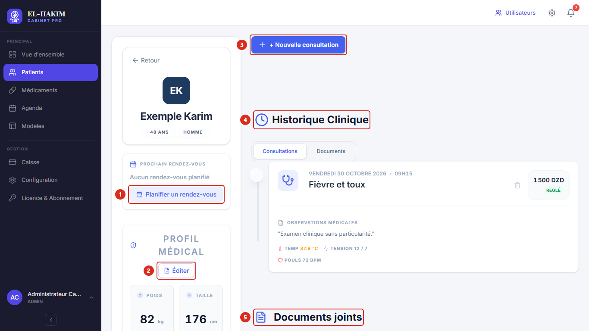
- Planifier un rendez-vous : donne un rendez-vous à ce patient.
- Éditer : ouvre le générateur de documents (certificat, arrêt de travail…). Voir « Établir un document ».
- + Nouvelle consultation : commence une consultation.
- Historique Clinique : les consultations et les documents du patient, du plus récent au plus ancien.
- Documents joints : les fichiers ajoutés au dossier (analyses, comptes rendus scannés…).
Un dossier contient des données de santé. Ne laissez pas un dossier ouvert à l'écran en votre absence.
3.4 Modifier le profil médical (poids, taille…)
Le PROFIL MÉDICAL montre le poids, la taille, le groupe sanguin, les allergies et les maladies chroniques.
- Passez la souris sur la case à modifier (par exemple POIDS) : un petit bouton apparaît. Cliquez dessus.
- Saisissez la nouvelle valeur.
- Cliquez sur Enregistrer.
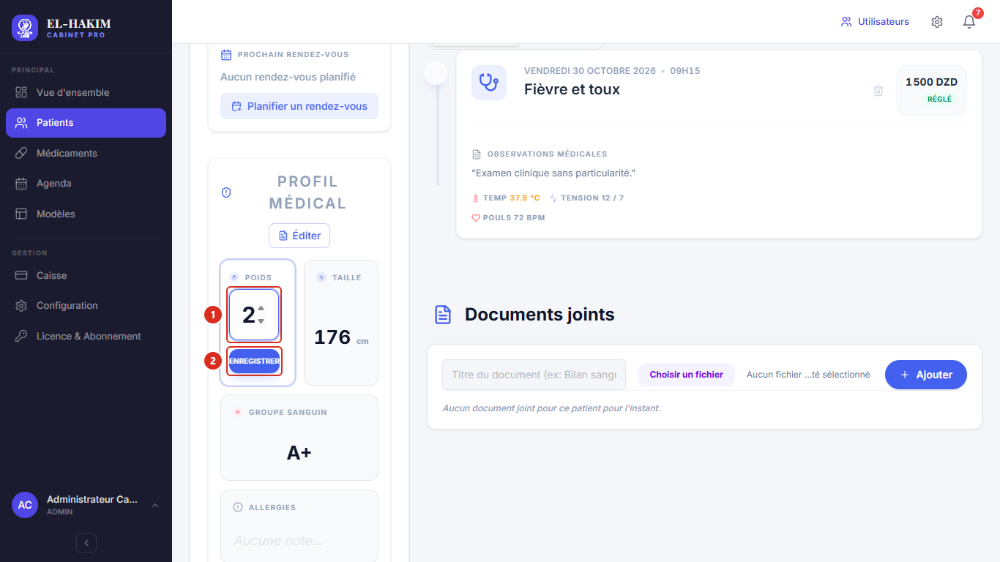
Pour corriger l'état civil (nom, date de naissance, téléphone), cliquez sur Modifier dans la liste des patients, sur la ligne du patient.
3.5 Joindre un document au dossier
- Dans le dossier, descendez jusqu'à Documents joints.
- Saisissez un titre (exemple : « Bilan sanguin »).
- Cliquez sur Choisir un fichier et choisissez le fichier (PDF, image…).
- Cliquez sur Ajouter.
4. Gérer les rendez-vous et l'agenda
Les rendez-vous durent 30 minutes, entre 08h00 et 19h00 (dernier début possible : 18h30). On ne peut pas donner un rendez-vous dans le passé.
4.1 Donner un rendez-vous depuis le dossier du patient
- Ouvrez le dossier du patient.
- Cliquez sur Planifier un rendez-vous.
- Choisissez la DATE ET HEURE. Le message Créneau disponible confirme que le créneau est libre.
- Cliquez sur Confirmer le rendez-vous.
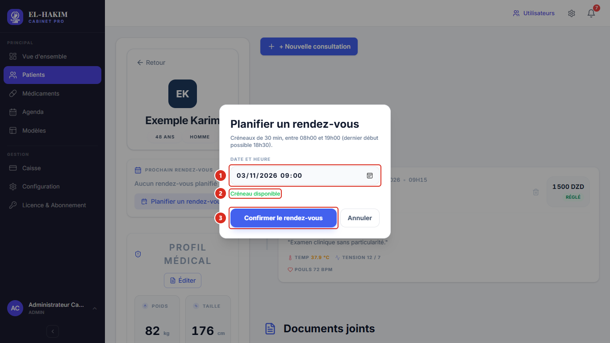
4.2 Lire l'agenda
- Dans le menu de gauche, cliquez sur Agenda.
- Choisissez l'affichage : Jour, Mois ou 3 Mois.
- Changez de date avec les flèches de part et d'autre de la date.
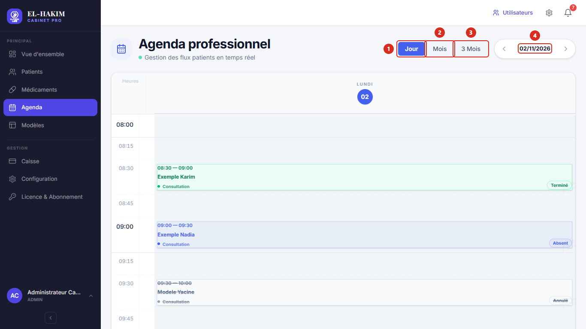
Chaque rendez-vous affiche son heure, le nom du patient, le type d'acte et son état : En attente (à venir), En salle (patient arrivé), En cours, Terminé, Absent, Annulé. La ligne bleue marque l'heure actuelle (Direct).
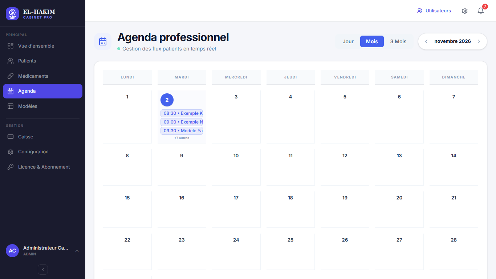
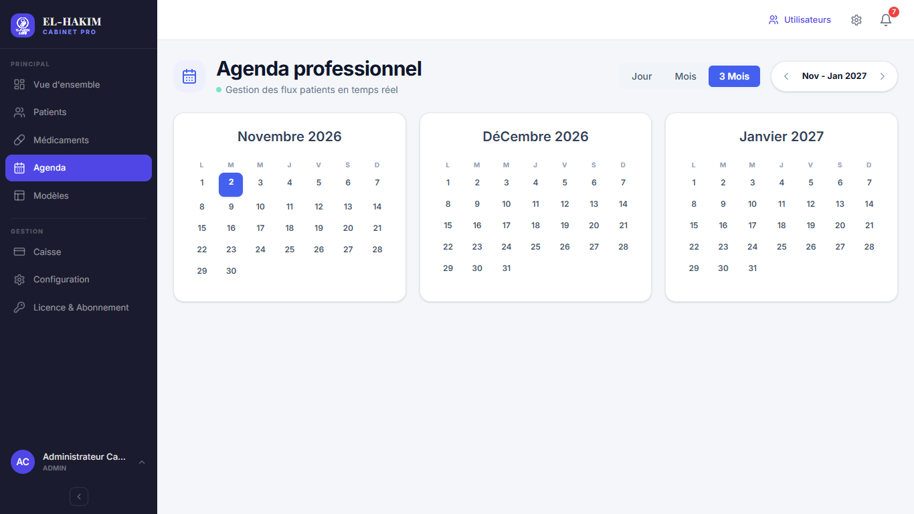
4.3 Donner un rendez-vous depuis l'agenda
- Dans la vue Jour, cliquez sur un créneau libre. La fenêtre Planifier un Patient s'ouvre, avec la date et l'heure du créneau.
- Dans RECHERCHE PATIENT EXISTANT, tapez le nom ou le téléphone, puis cliquez sur le patient dans la liste.
- Choisissez le TYPE D'ACTE MÉDICAL : Consultation, Contrôle, Urgence ou Délégué.
- Cliquez sur Planifier.
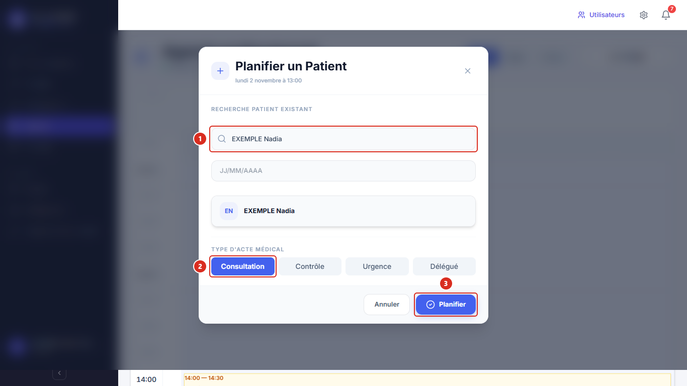
Le patient n'a pas encore de dossier ? Utilisez Nouvel Assuré (Création Rapide) dans la même fenêtre : saisissez le nom, le prénom et la date de naissance, puis Ajouter ce patient.
4.4 Signaler l'arrivée, une absence ou une annulation
- Dans l'agenda, faites un clic droit sur le rendez-vous. Le menu ACTION RAPIDE s'ouvre.
- Choisissez :
- LE PATIENT EST ARRIVÉ : le patient passe en salle d'attente ;
- MARQUER COMME ABSENT ;
- ANNULER LE RDV.
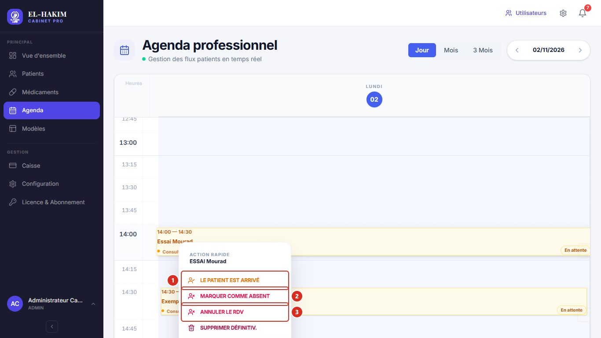
SUPPRIMER DÉFINITIV. efface le rendez-vous de l'agenda. Préférez ANNULER LE RDV, qui garde une trace.
4.5 Voir le détail d'un rendez-vous
Cliquez (clic gauche) sur un rendez-vous. La fenêtre Détails du créneau affiche l'heure, le type et l'état.
- Supprimer : supprime le rendez-vous (une confirmation est demandée).
- Ouvrir : ouvre le dossier du patient.
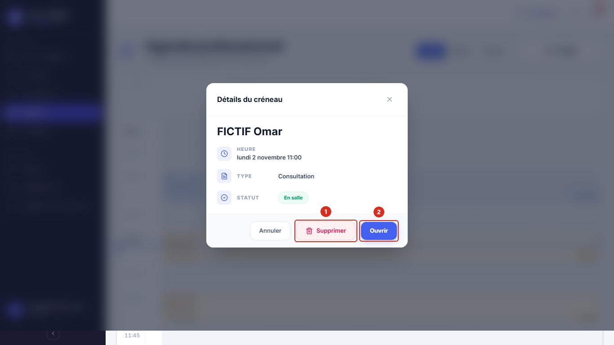
5. Accueillir les patients : la salle d'attente
- Quand un patient arrive, la secrétaire le signale : clic droit sur son rendez-vous dans l'agenda, puis LE PATIENT EST ARRIVÉ.
- Il apparaît dans la Salle d'Attente de Vue d'ensemble, avec le temps d'attente (« En attente depuis … »).
- Le médecin clique sur Prendre pour appeler le patient.
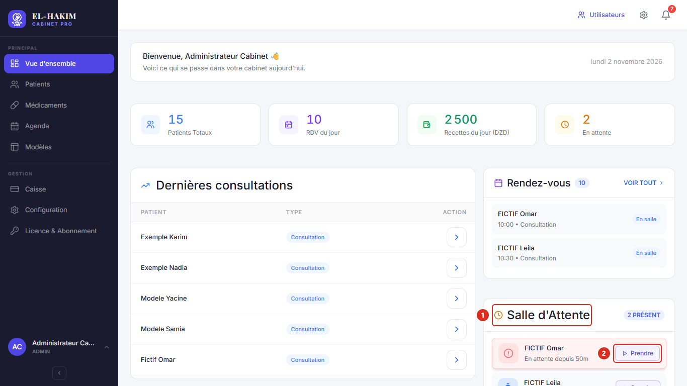
Le dossier du patient s'ouvre avec la mention CONSULTATION ACTIVE. Le message « Consultation lancée » confirme l'appel. Cliquez sur + Nouvelle consultation pour commencer.
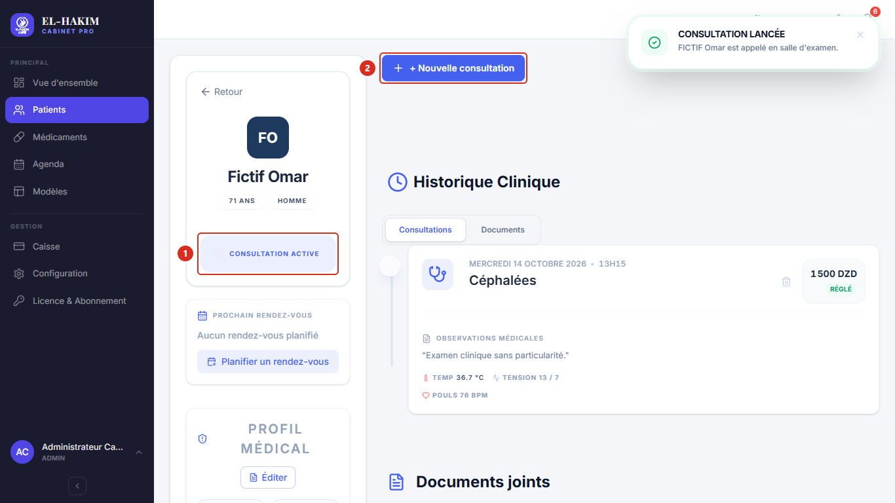
6. Faire une consultation
- Dans le dossier du patient, cliquez sur + Nouvelle consultation.
- Saisissez les constantes dans les cases : Température, Tension, Pouls, SpO₂, Glycémie. L'IMC est calculé à partir du poids et de la taille.
- Dans Observations, choisissez le motif : Consultation, Contrôle, Urgence ou Établir un document.
- Rédigez vos Notes cliniques.
- Rédigez l'Ordonnance si besoin (voir le chapitre suivant).
- Terminez avec Clôturer la visite (voir « Clôturer la visite et encaisser »).
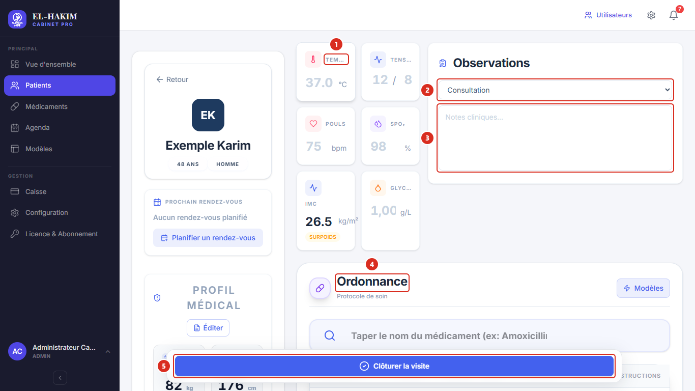
Clôturer la visite reste grisé tant que le motif n'est pas choisi.
7. Rédiger une ordonnance
7.1 Ajouter un médicament
- Dans la partie Ordonnance de la consultation, tapez le nom du médicament dans Taper le nom du médicament (ex: Amoxicilline).
- Cliquez sur le médicament voulu dans la liste des résultats.
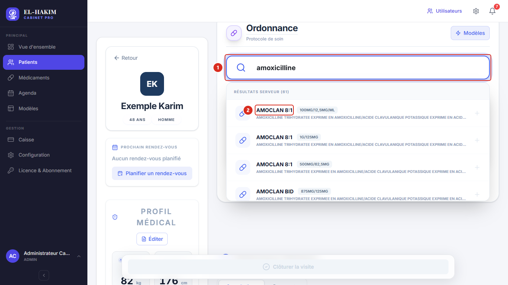
La fenêtre de posologie s'ouvre :
- 1. DURÉE DU TRAITEMENT : cliquez sur une durée (exemple : 7 jours) ou saisissez-la.
- 2. QUANTITÉ (QSP) : cliquez sur une quantité (exemple : 1 flacon) ou saisissez-la.
- 3. POSOLOGIE / INSTRUCTIONS : cliquez sur la dose et la fréquence (exemple : 1 cuillère à café (5ml), 2 fois par jour).
- Cliquez sur Valider la posologie.
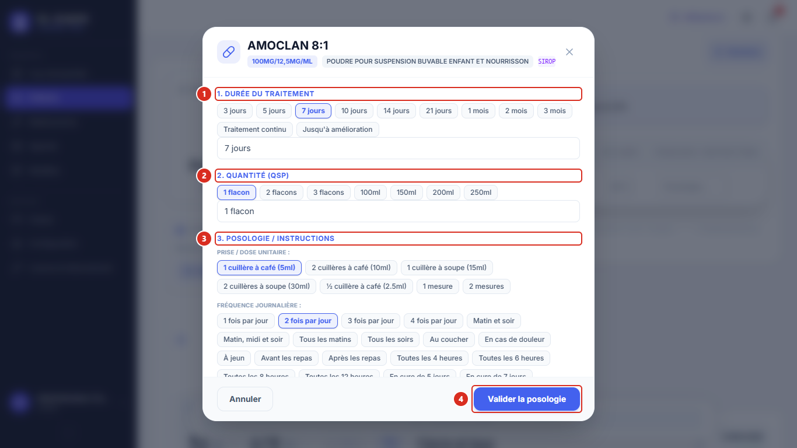
Le médicament s'ajoute à l'ordonnance. Chaque case de la ligne reste modifiable.
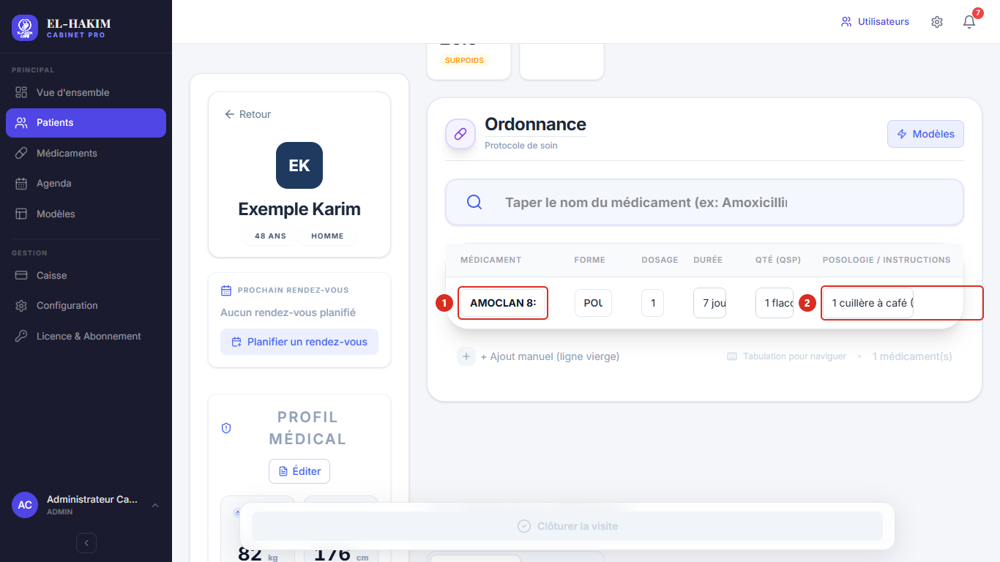
Un médicament introuvable ? Cliquez sur + Ajout manuel (ligne vierge) sous l'ordonnance et saisissez-le. La touche Tab passe d'une case à la suivante.
7.2 Utiliser un modèle d'ordonnance
Pour une prescription fréquente, enregistrez-la une fois comme modèle (voir « Les modèles »). Ensuite, dans la consultation, cliquez sur Modèles (en haut à droite de l'ordonnance), choisissez le modèle dans la Bibliothèque, puis cliquez sur Appliquer.
8. Clôturer la visite et encaisser
- Cliquez sur Clôturer la visite. La consultation est enregistrée (message « Consultation enregistrée ») et la fenêtre Finaliser le paiement s'ouvre.
- Dans ACTES PRATIQUÉS (NOMENCLATURE), cliquez sur les actes faits pendant la visite.
- Vérifiez le MONTANT FINAL À ENCAISSER (DZD), calculé à partir des actes choisis.
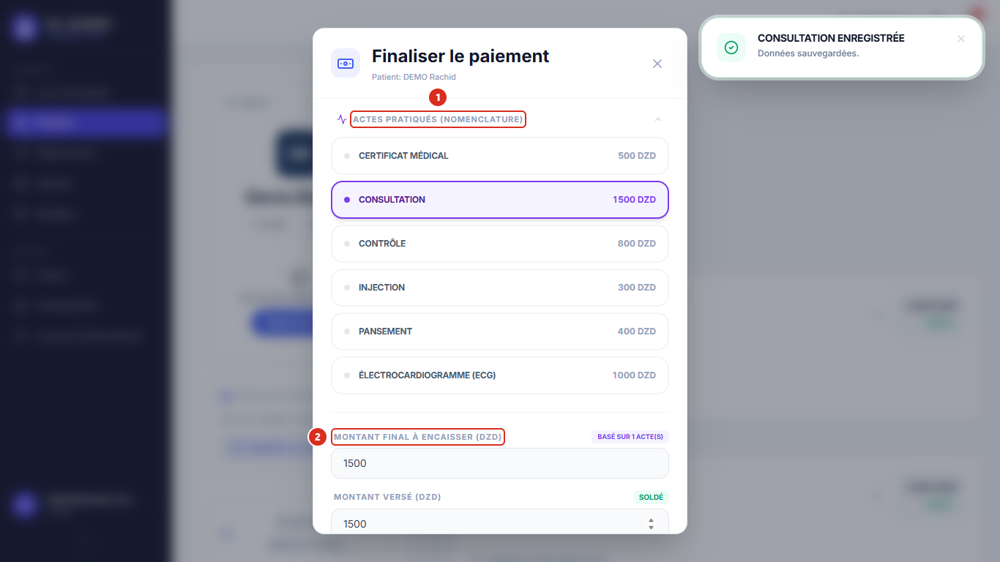
- Choisissez le STATUT DU RÈGLEMENT : PAYÉ, ou NON PAYÉ (DETTE) si le patient paiera plus tard.
- Choisissez le moyen de paiement : Espèces ou Carte/CIB.
- Pour confier l'encaissement à la secrétaire, cochez DÉLÉGUER L'ENCAISSEMENT AU SECRÉTARIAT.
- Cliquez sur VALIDER LE PAIEMENT.
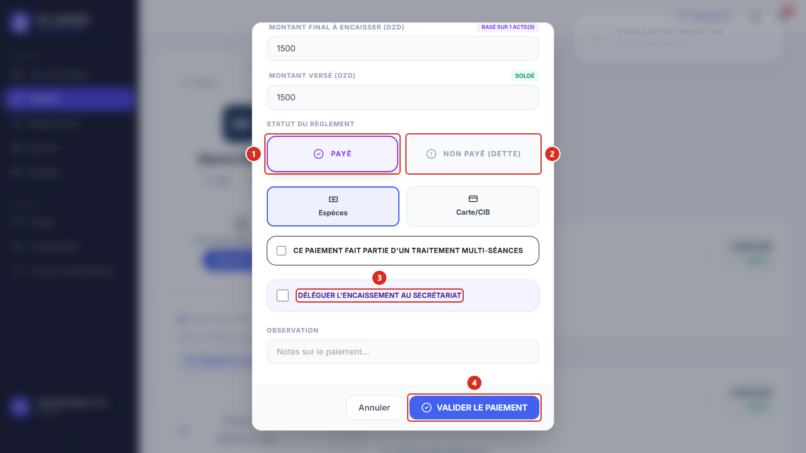
MONTANT VERSÉ (DZD) sert quand le patient ne paie qu'une partie : le reste (MANQUE) est noté comme dette. Pour un traitement en plusieurs séances, voir la section suivante.
8.1 Un traitement en plusieurs séances
Certains soins se font en plusieurs visites pour un prix global (série de pansements, rééducation, soins dentaires…). Le patient paie à son rythme : EL-HAKIM PRO suit le total, ce qui est déjà versé et le reste à payer.
Première séance : créer le traitement
- Clôturez la visite comme d'habitude. Dans Finaliser le paiement, cochez CE PAIEMENT FAIT PARTIE D'UN TRAITEMENT MULTI-SÉANCES.
- Dans TRAITEMENT CONCERNÉ, laissez + Nouveau traitement..., puis saisissez le NOM DU TRAITEMENT.
- Saisissez le PRIX TOTAL (DZD) du traitement complet.
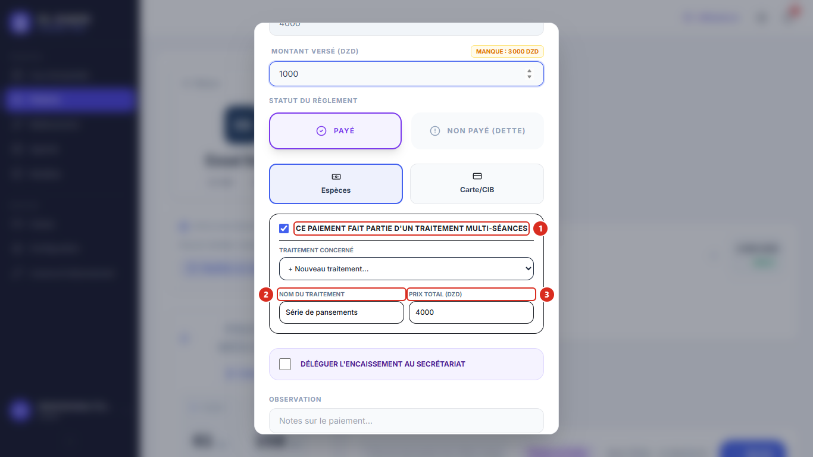
- Le MONTANT FINAL À ENCAISSER (DZD) prend la valeur du prix total.
- Dans MONTANT VERSÉ (DZD), saisissez ce que le patient paie aujourd'hui. Le MANQUE affiché est le reste à payer.
- Cliquez sur VALIDER LE PAIEMENT.
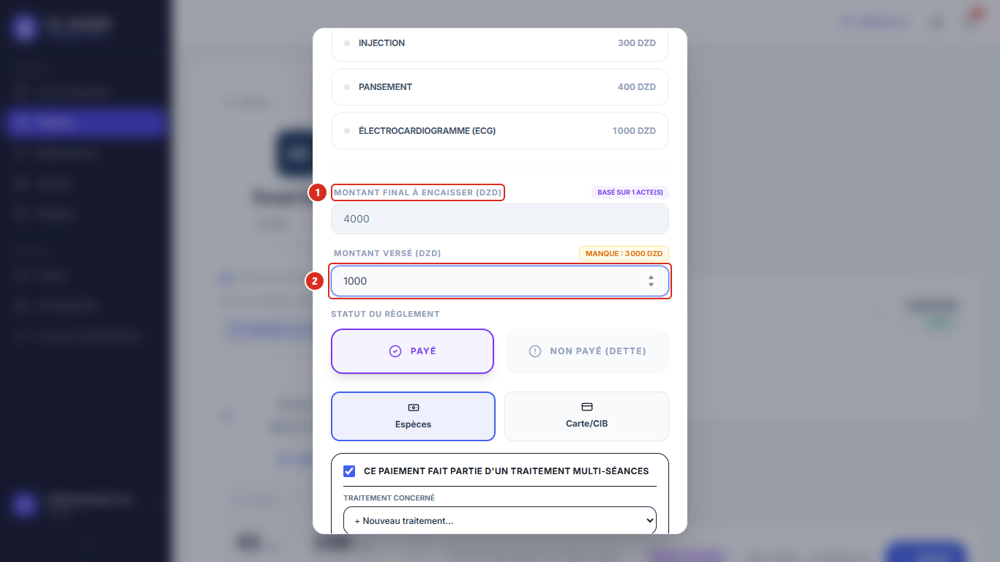
Séances suivantes
- Clôturez la visite, puis cochez CE PAIEMENT FAIT PARTIE D'UN TRAITEMENT MULTI-SÉANCES.
- Le traitement en cours est choisi dans TRAITEMENT CONCERNÉ, avec son reste à payer (exemple : « Série de pansements (Reste: 3 000 DZD) »). Le montant à encaisser est ce reste.
- Saisissez le MONTANT VERSÉ (DZD) du jour, puis cliquez sur VALIDER LE PAIEMENT.
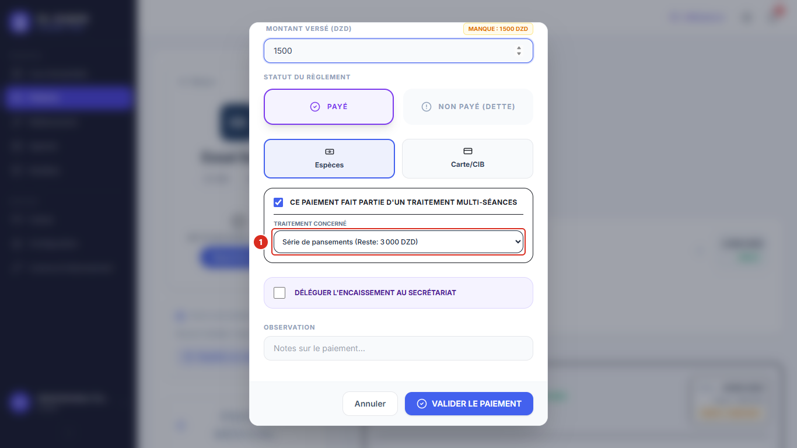
Suivre le traitement dans le dossier
Dans l'Historique Clinique du patient, les séances du traitement sont regroupées sous son nom, avec son état (EN COURS, puis Clôturé), le nombre de séances, le TOTAL, le Versé et le RESTE. Chaque séance affiche le montant versé ce jour-là, avec la mention Séance du traitement. La DETTE EN COURS du patient (sous son nom, en haut du dossier) correspond au reste du traitement.
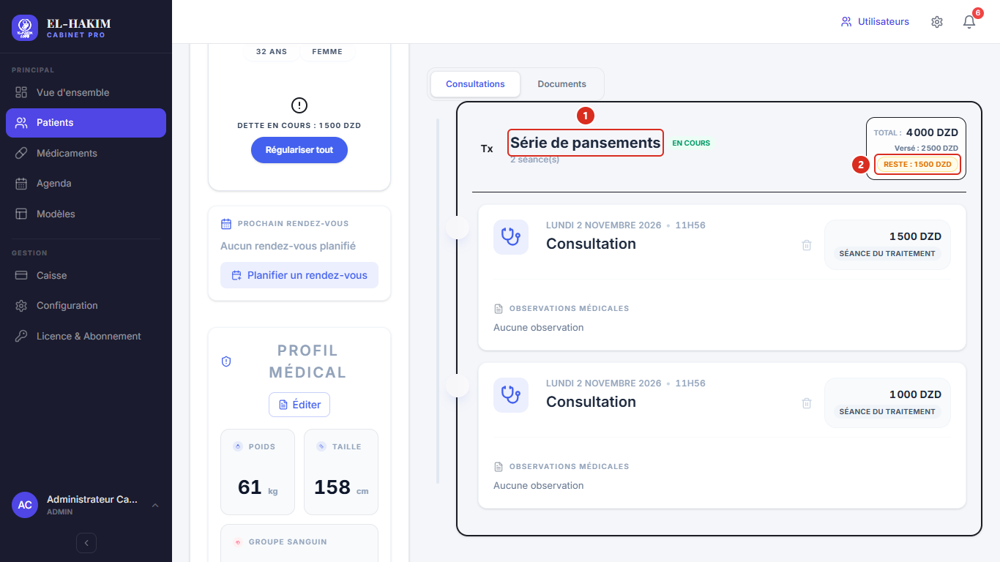
Le reste à payer est recalculé à chaque séance : la dette du patient n'est jamais comptée deux fois. Quand tout est payé, le traitement affiche TOTALEMENT RÉGLÉ et passe à l'état Clôturé.
Cochez la case à chaque séance du traitement. Sinon, la séance est encaissée comme une visite ordinaire et n'est pas rattachée au traitement.
Un même patient peut avoir plusieurs traitements ouverts : choisissez le bon dans TRAITEMENT CONCERNÉ. Pour en commencer un autre, choisissez + Nouveau traitement....
Si l'ordonnance contient des médicaments, son aperçu avant impression s'ouvre à la fermeture de la fenêtre de paiement.
9. Établir un document
9.1 Choisir le type de document
- Ouvrez le dossier du patient.
- Dans PROFIL MÉDICAL, cliquez sur Éditer. Le Générateur de documents s'ouvre.
- Cliquez sur le type de document : ARRÊT DE TRAVAIL, COMPTE RENDU, BILAN BIOLOGIQUE, ORD. LUNETTES (pour les ophtalmologues), IMAGERIE MÉDICALE, CERTIFICAT MÉDICAL ou LETTRE D'ORIENTATION.
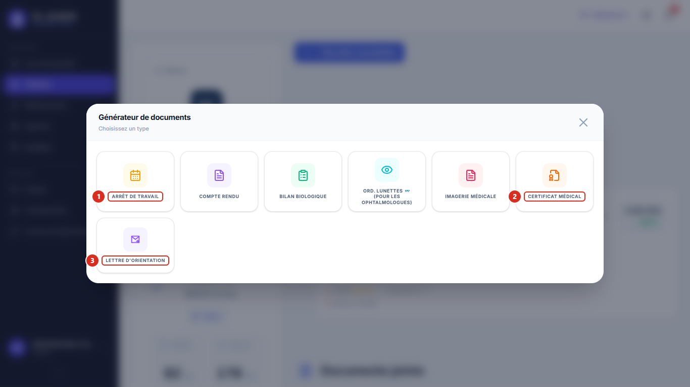
9.2 Exemple : un certificat médical
- Cliquez sur CERTIFICAT MÉDICAL.
- Dans CHOIX RAPIDE, cliquez sur un texte type (APTITUDE SPORTIVE, BONNE SANTÉ, ARRÊT DE TRAVAIL, TEXTE LIBRE).
- Complétez ou corrigez le texte dans RÉDACTION.
- Cliquez sur GÉNÉRER L'APERÇU.
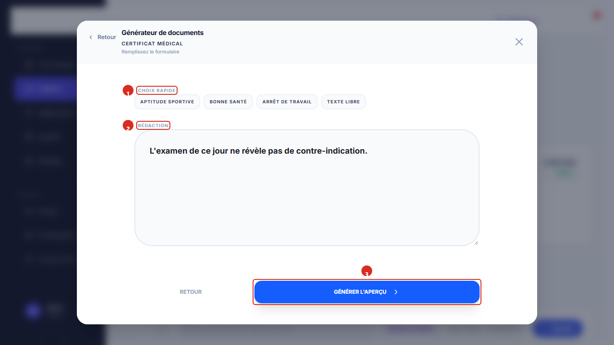
L'aperçu s'ouvre dans une fenêtre à part. Vérifiez le document, choisissez l'imprimante, puis lancez l'impression.
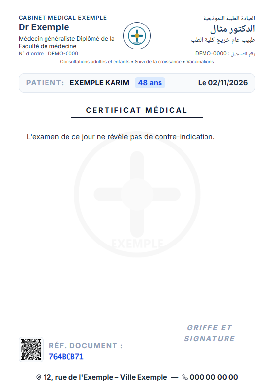
L'en-tête (nom, spécialité, adresse, logo) vient de Configuration › Identité. Chaque document porte une RÉF. DOCUMENT et un code QR qui l'identifient.
9.3 Exemple : un arrêt de travail
- Cliquez sur ARRÊT DE TRAVAIL.
- Réglez la DURÉE (JOURS) avec − et +, puis la DATE DE DÉBUT.
- Cliquez sur GÉNÉRER L'APERÇU.
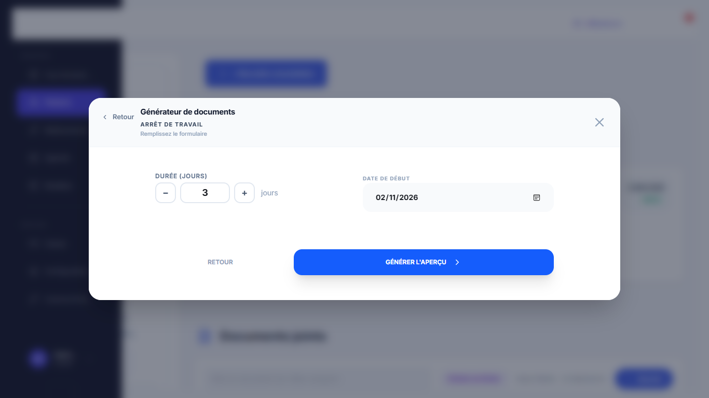
9.4 Retrouver et réimprimer un document
- Dans le dossier du patient, ouvrez l'onglet Documents de l'Historique Clinique.
- Cliquez sur Voir pour rouvrir et réimprimer le document, ou sur Supprimer pour l'effacer.
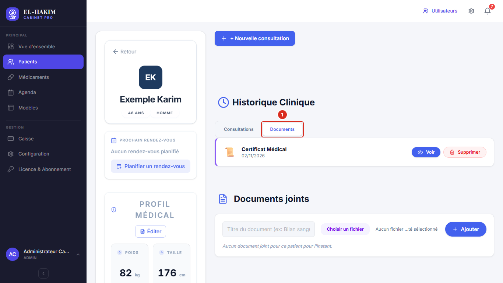
9.5 Papier et imprimante
Chaque document a un format de feuille fixe, toujours en portrait (feuille en hauteur) :
| Document | Feuille à mettre dans l'imprimante |
|---|---|
| Ordonnance | A5 |
| Certificat médical | A5 |
| Arrêt de travail | A5 |
| Bilan biologique | A5 |
| Imagerie médicale | A5 |
| Ordonnance de lunettes | A5 |
| Lettre d'orientation | A5 |
| Compte rendu | A4 |
| Courbes de croissance | A4 |
Le format A5 est la moitié d'une feuille A4 (14,8 × 21 cm).
Avec une seule imprimante, gardez du papier A5 dans le bac : c'est le format de presque tous les documents. Mettez du A4 seulement pour un compte rendu ou des courbes de croissance.
Avant de lancer l'impression, vérifiez dans la fenêtre d'aperçu le format de papier choisi pour l'imprimante : il doit correspondre à la feuille du bac (A5 ou A4). Sinon, le document sort réduit, coupé ou mal placé. Si l'imprimante ne propose pas le A5, réglez-le une fois pour toutes dans ses préférences (Paramètres de Windows › Imprimantes et scanners).
Une ordonnance longue continue sur une deuxième feuille A5, avec le numéro de page en bas. Mettez assez de feuilles dans le bac.
10. Suivre la croissance d'un enfant
Ce module s'utilise pour les patients de moins de 20 ans. Il s'active dans Configuration › Identité, partie MODULES (case Courbes de croissance (pédiatrie)). Les courbes utilisent les références CDC 2000.
- Ouvrez le dossier de l'enfant, puis l'onglet Croissance de l'Historique Clinique.
- Saisissez la DATE, le POIDS (KG), la TAILLE (CM) (dans MESURÉE, choisissez debout ou couchée) et le PC (CM) (périmètre crânien).
- Cliquez sur Ajouter la mesure.
- Imprimer imprime les courbes.
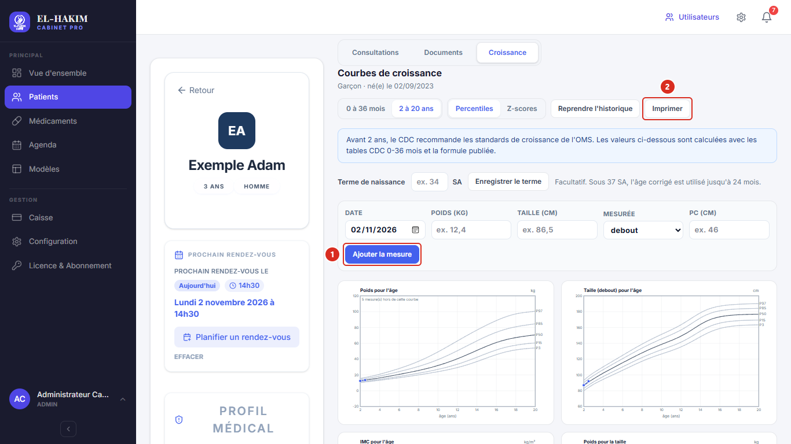
Les courbes (poids, taille, IMC…) se mettent à jour à chaque mesure. Choisissez la période (0 à 36 mois ou 2 à 20 ans) et l'affichage (Percentiles ou Z-scores).
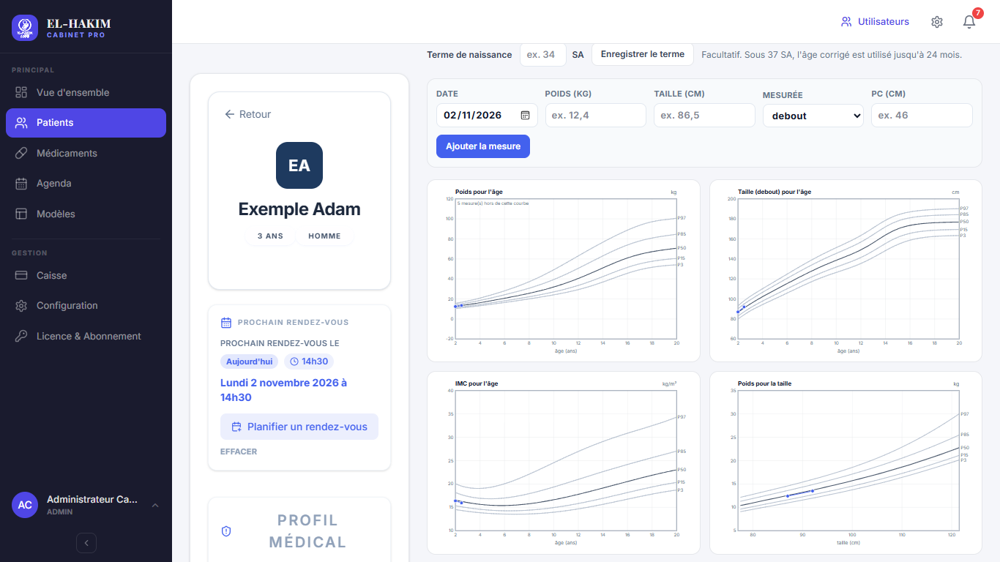
Pour un enfant né prématuré, saisissez le Terme de naissance (en semaines d'aménorrhée, SA) puis Enregistrer le terme : sous 37 SA, l'âge corrigé est utilisé jusqu'à 24 mois.
11. Les modèles
- Dans le menu de gauche, cliquez sur Modèles. La Bibliothèque de Modèles s'affiche.
- Cliquez sur + Créer un modèle.
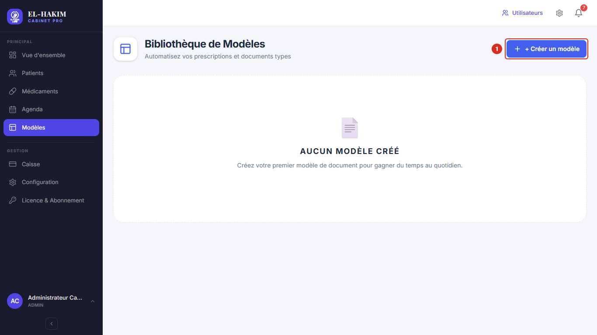
- Dans 1. QUEL TYPE DE MODÈLE ?, choisissez : ORDONNANCE, BILAN BIOLOGIQUE, IMAGERIE MÉDICALE, ARRÊT DE TRAVAIL, CERTIFICAT MÉDICAL ou COMPTE RENDU.
- Cliquez sur SUIVANT, donnez un nom au modèle et remplissez-le.
- Cliquez sur Enregistrer le Modèle.
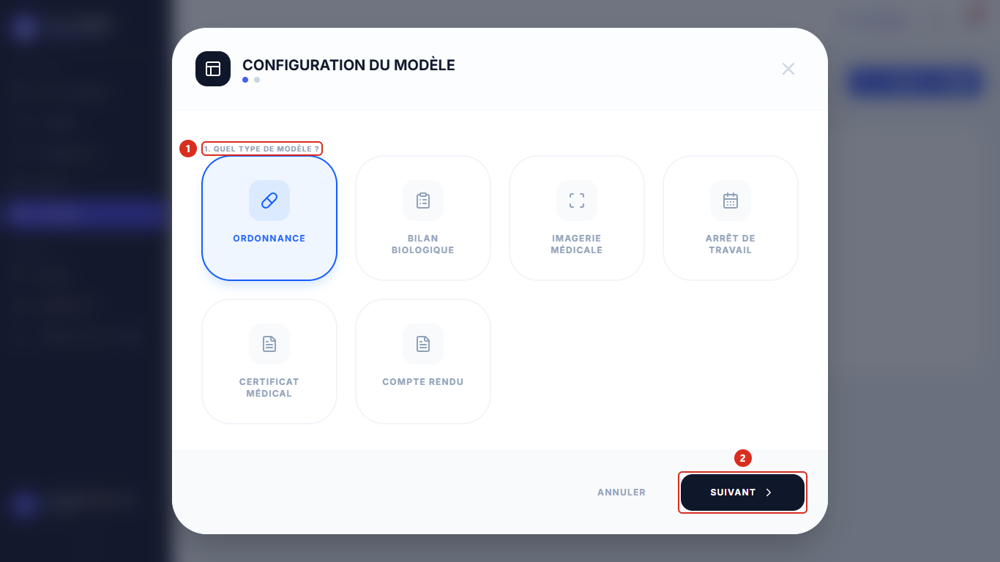
Dans le texte d'un modèle, les Variables (+ Nom Patient, + Âge, + Date, + Genre) sont remplacées automatiquement par les informations du patient.
12. Les médicaments
- Dans le menu de gauche, cliquez sur Médicaments. La nomenclature s'affiche.
- Pour chercher, tapez le nom commercial ou le nom générique dans la barre de recherche.
- Pour ajouter un médicament, cliquez sur Ajouter, remplissez la FICHE PHARMACEUTIQUE (marque, molécule, code CNAS, forme, dosage), puis cliquez sur ENREGISTRER.
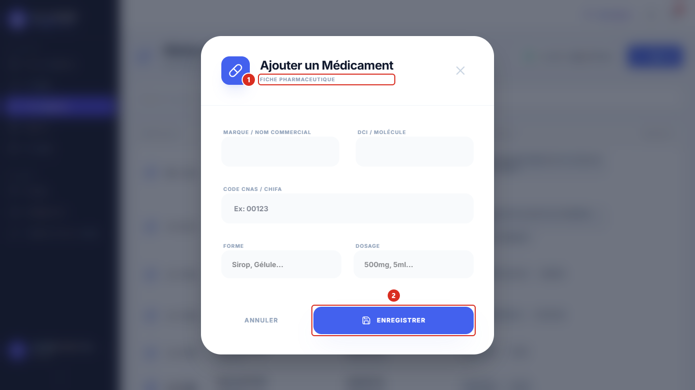
13. La caisse
La caisse est réservée au médecin et à l'administrateur.
- Dans le menu de gauche, cliquez sur Caisse. L'écran Finance & Trésorerie s'affiche : recettes, dépenses, solde et dettes, puis les Mouvements du jour.
- Les paiements des visites clôturées s'y ajoutent seuls.
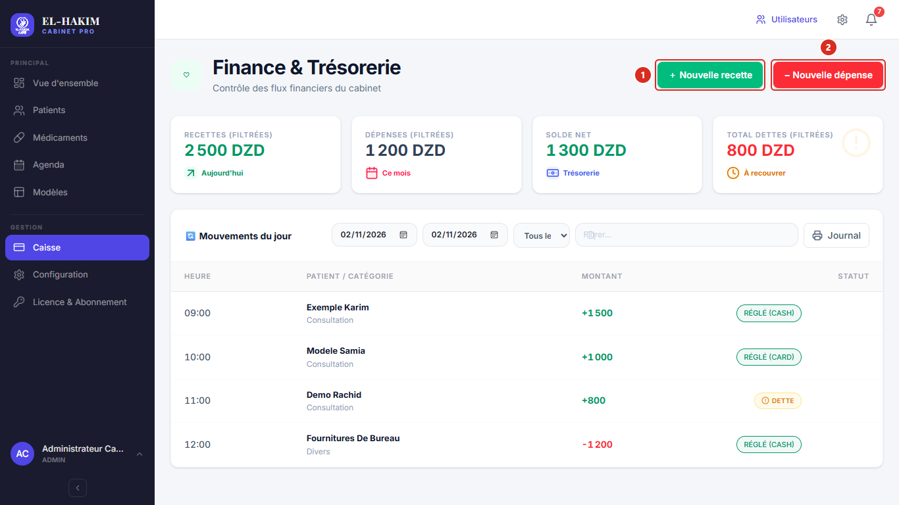
13.1 Ajouter une recette ou une dépense
- Cliquez sur ＋ Nouvelle recette (ou − Nouvelle dépense).
- Saisissez le MONTANT (DZD).
- Choisissez la CATÉGORIE.
- Si le patient paiera plus tard, cochez MARQUER COMME DETTE PATIENT. Complétez NOM / LIBELLÉ (OPTIONNEL) et le MOYEN de paiement.
- Cliquez sur VALIDER.
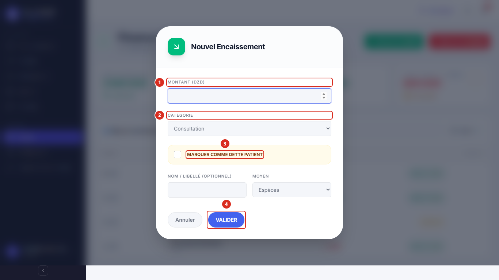
Les dettes d'un patient apparaissent dans son dossier. Régulariser enregistre leur paiement.
14. Bonnes pratiques
- Chaque personne utilise son propre compte. Déconnectez-vous avant de quitter le poste.
- Faites une sauvegarde au moins une fois par semaine sur le serveur, et gardez-la hors de l'ordinateur (voir le Guide d'installation, chapitre « Sauvegarder et restaurer les données »).
- Laissez le serveur allumé, avec EL-HAKIM PRO ouvert, pendant les heures d'ouverture du cabinet.
- Vérifiez chaque document dans l'aperçu avant de l'imprimer.
- Installez les mises à jour proposées, d'abord sur le serveur, puis sur les autres postes.